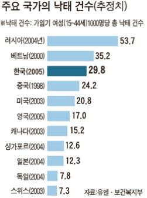

POSTS
"G.I. Jonny" 호르몬 완충 선남선녀들아 함께 보자.
2007년, 영국 BBC 방송국에서는 방어하지 않은 성교의 위험성에 대한 홍보를 위해
“G.I. Jonny” 캠페인을 시작했다.
캠페인 효과 만빵!
호르몬 완충 선남선녀들아 함께 보자.
이분이 바로 Jonny씨!

뜬금없다 갸우뚱 말고 아래 도표도 함 보자.

[출처] 감기 치료만큼 쉬운 낙태 중앙일보 |작성자 태극기
“2005년 한국에서 시행된 임신중절 건수는 34만2,233건으로 그 해 태어난 신생아(43만8,062명)의 78.1%에 달한다고 추정” (한국일보)